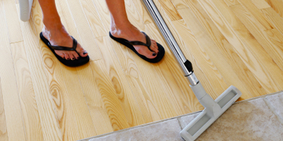
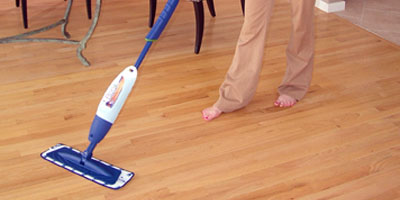
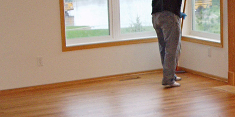

Place throw rugs in front of kitchen sink and any doors leading outside where heavy traffic occurs. However, do not do this until at least two weeks after the finish has been applied. Chairs, and any other furniture that is moved frequently, should have floor glides attached to the bottom of each leg to help prevent scratching and wear. Don't allow water to come in contact with the floor for the first two weeks after it has been finished, water marks may occur.
Regular dust mopping or vacuuming is an essential part of hardwood floor care. A good quality dust mop or vacuum head is the most effective tool for cleaning dust and dirt off the floor. To keep you floor looking its best, dust mop or vacuum at least twice a week. Dust or vacuum more often on floors with heavy traffic.
Spills and tracked in dirt can be cleaned by lightly damp mopping the floor with a household sponge mop. Use clean water for regular sponge mopping. DO NOT over-wet the mop. Excessive water can damage the floor. In addition to cleaning with water, we recommend using "Bona Swedish Formula Hardwood Floor Cleaner" Which is available from Restoration Hardware or you can also use Zep Hardwood floor cleaner from Home Depot. Do not use any other products, most of them can look nice but leave a wax build up on your floor.
Following a regular maintenance program will preserve the life of you hardwood floor for years. Eventually your floor may need to be recoated. A hardwood floor should be recoated when the original finish is showing signs of wear but before it has worn down to the bare wood. Bare wood will be stained by dirt and grime and will need to be resanded. Be sure to call and schedule your buff and recoat at first sign of wear. A typical floor may need another coat anywhere from 4 to 7 years depending on customer wear. A buff and recoat can be one-third the price of resanding a floor.